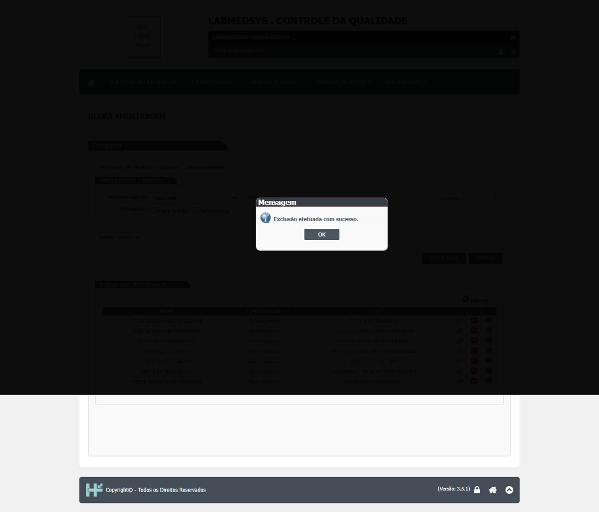
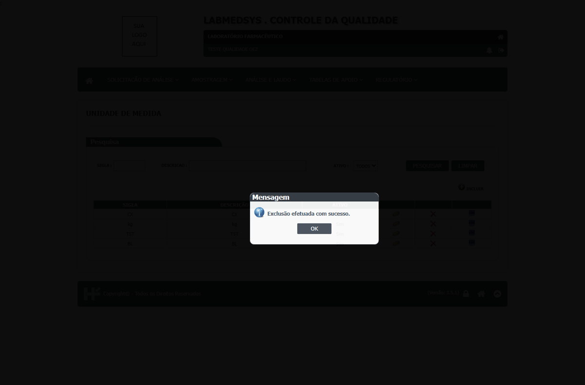

DV-CQ-013 · Regra de amostragem em uso e unidade de medida usada numa regra podem ser excluídas
A regra de amostragem do item 20011, **já usada** na amostragem da 016/26, foi excluída ("Exclusão efetuada com sucesso.") e saiu da lista. A unidade **TSTU2**, escolhida numa regra de análise, também foi excluída com sucesso. (Para a **regra de análise** em uso a tela recusou: "Já existe registro de análise para essa regra.", CT-CQ-032 passou.)
Como reproduzir o erro, passo a passo
- Excluir, na lista de Regra Amostragem, uma regra que já foi usada em uma amostragem.
- Criar uma unidade, usá-la numa regra de análise e excluí-la em Unidade de Medida.
Esperado
Recusar a exclusão (ou só inativar) quando o cadastro está em uso.
Obtido
Excluídas sem aviso.
Evidência (captura da tela)


DV-CQ-015 · As permissões do perfil (incluir, excluir) e a função do usuário não são conferidas nas telas de cadastro
Um usuário de **perfil só de consulta** (sem Incluir, Alterar nem Excluir marcados) abriu **Unidade de Medida**, viu os botões Incluir e Excluir, **incluiu** a unidade TSTU1 ("Inclusão efetuada com sucesso.") e a **excluiu** ("Exclusão efetuada com sucesso."). Um usuário **sem nenhuma função profissional** do CQ abriu a **Regra Estabilidade** pelo menu (a tela não tem filtro de acesso). Só as exclusões de regra de análise, regra de amostragem e verificação de amostragem pedem a permissão de excluir.
Como reproduzir o erro, passo a passo
- Entrar com o usuário de perfil só de consulta, abrir Unidade de Medida, Incluir uma unidade e Salvar; depois excluir a mesma.
- Entrar com o usuário sem função profissional e abrir Regra Estabilidade pelo menu.
Esperado
Recusar incluir e excluir a quem só tem consulta; limitar a Regra Estabilidade a quem tem a função de estabilidade.
Obtido
Tudo permitido.
Evidência (captura da tela)